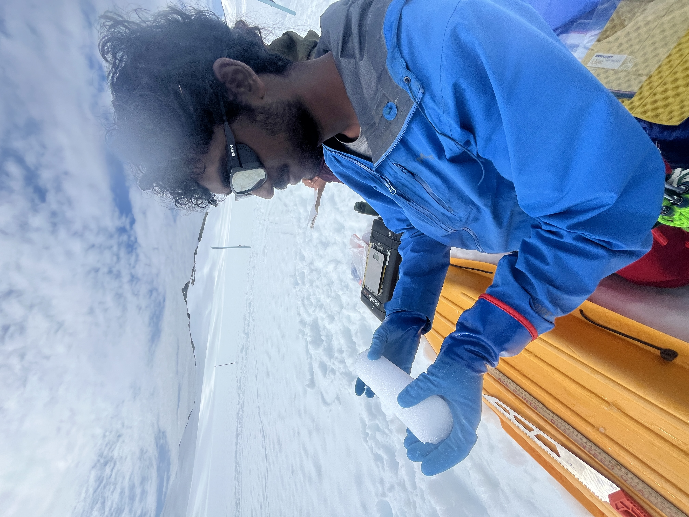

Geosciences · Princeton University
I am a rising senior at Princeton University studying geosciences, working at the intersection of paleoclimatology, glaciology, and data assimilation. My research focuses on reconstructing Antarctic climate history, identifying ice core drilling sites, and understanding the continent's contribution to past and future sea level change.
I am a student at Princeton University studying geosciences, conducting research with Dr. T.J. Fudge at the University of Washington and Dr. Olivia Truax at the University of Canterbury. My work uses data assimilation methodologies, combining ice core proxy records with climate model simulations, to reconstruct 19th- and 20th-century Antarctic snow accumulation and quantify the continent's contribution to global mean sea level. I have also applied this framework to identify optimal shallow ice core drilling locations across Antarctica.

I applied an Ensemble Kalman Filter methodology for Antarctic climate reconstruction, combining ice core proxy records with climate model simulations to reconstruct 19th- and 20th-century snow accumulation fields and sea level contribution. Building on this framework, I applied an optimal sensor technique (the first application of this method to Antarctic ice core site selection) to identify high-value shallow drilling locations, including case studies at Crary Ice Rise, Lyddan Ice Rise, and the ITASE cores in West Antarctica.
GitHub (reconstruction) → GitHub (optimal sensor) →I developed a method to reconstruct time-varying climate forcing inputs to the Community Ice Sheet Model using existing ice core records, with the ultimate goal of running simulations on multi-millennial timescales to identify optimal drilling locations for recovering the oldest Antarctic ice.
GitHub →I am developing a graph neural network-based methodology for reconstructing Antarctic climate as an alternative to existing data assimilation approaches. By leveraging innovative approaches in artificial intelligence and machine learning, this method aims to capture complex spatial relationships across the Antarctic continent that traditional methodologies may not fully exploit.
GitHub →In Summer 2025 at the National Centre for Atmospheric Science in Leeds, United Kingdom, I produced 2D spatial reconstructions of Antarctic snow accumulation using atmospheric radar profiles, and developed a process-based snowfall retrieval scheme from a scanning Doppler radar at Troll Station, Antarctica.
GitHub →As a participant in the 2024 Juneau Icefield Research Program, I contributed to multiple field projects: drilling and processing three ~15 m ice cores for water isotope analysis, and installing a TRI radar station to monitor supraglacial hydrology.
See also my Google Scholar profile.